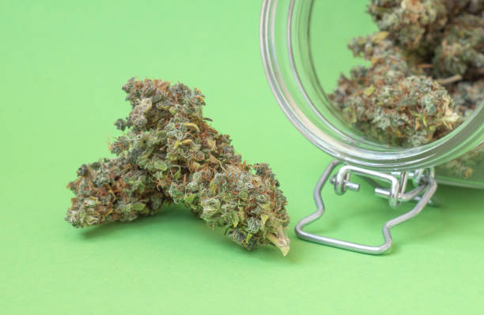

News
Dispensary Search Engine Optimization
Content Marketing Strategies for Dispensaries
Social Media Advertising for Dispensaries
About Us
Marketing SEO Tips Dispensary
What is the role of social media marketing for dispensaries?
Jun 10, 2024
Social media marketing plays a crucial role for dispensaries in today's digital age.. With the increasing competition in the cannabis industry, it is more important than ever for dispensaries to utilize social media platforms to reach their target audience and drive sales.
One of the key benefits of social media marketing for dispensaries is its ability to create brand awareness and establish a strong online presence.
What is the impact of social media marketing on dispensary sales?
Jun 10, 2024
The impact of social media marketing on dispensary sales is undeniable.. In today's digital age, businesses need to have a strong online presence in order to reach their target audience and drive sales.
What is the best social media platform for dispensaries to use in their marketing efforts?
Jun 10, 2024
In today's digital age, social media has become an essential tool for businesses to reach their target audience and promote their products or services.. This is especially true for dispensaries in the cannabis industry, where regulations can limit traditional advertising methods.
When it comes to choosing the best social media platform for dispensaries to use in their marketing efforts, there are several factors to consider.
What is the importance of engaging content in social media marketing for dispensaries?
Jun 10, 2024
Engaging content is essential in social media marketing for dispensaries because it helps to build a strong connection with customers and potential clients.. In the competitive cannabis industry, having a strong online presence is crucial for attracting and retaining customers.
What is the ROI potential of investing in social media marketing for dispensaries?
Jun 10, 2024
When it comes to investing in social media marketing for dispensaries, the potential return on investment (ROI) can be significant.. In today's digital age, having a strong online presence is crucial for any business looking to attract new customers and retain existing ones.
How to Grow Your Dispensary's Online Presence with Social Media Marketing
Jun 10, 2024
In today's digital age, having a strong online presence is crucial for any business, including dispensaries.. With the increasing popularity and acceptance of cannabis products, it is more important than ever to stand out from the competition and attract new customers.

How to Reach a Wider Audience and Increase Sales Through Social Media Marketing
Jun 10, 2024
In today's digital age, social media has become a powerful tool for businesses to reach a wider audience and increase sales.. With billions of active users on platforms like Facebook, Instagram, Twitter, and LinkedIn, the potential for growth through social media marketing is immense.
So, how can businesses effectively utilize social media to expand their reach and boost sales?
How to Create Engaging Content for Your Dispensary's Social Media Pages
Jun 10, 2024
In today's digital age, having a strong presence on social media is crucial for any business, including dispensaries.. However, simply posting content isn't enough - you need to create engaging content that will capture the attention of your followers and keep them coming back for more.
So, how do you go about creating engaging content for your dispensary's social media pages?
How to Utilize Influencers and Partnerships for Effective Social Media Marketing
Jun 10, 2024
In today's digital age, social media marketing has become an essential tool for businesses looking to reach their target audience and drive engagement.. One effective way to maximize the impact of your social media efforts is by utilizing influencers and forming strategic partnerships.
Influencers are individuals who have a large following on social media platforms and can sway the opinions and behaviors of their followers.
How to Measure the Success of your Dispensary's Social Media Marketing Campaigns
Jun 10, 2024
Social media has become an essential tool for businesses to connect with their audience and promote their products or services.. For dispensaries, social media marketing campaigns can be a powerful way to reach potential customers and build brand awareness.
The importance of social media marketing for dispensaries
Jun 10, 2024
In today's digital age, social media has become an essential tool for businesses to connect with their customers and promote their products or services.. This is especially true for dispensaries in the growing cannabis industry, where having a strong online presence can make all the difference in attracting new customers and building brand loyalty.
One of the key reasons why social media marketing is so important for dispensaries is its ability to reach a wide audience quickly and cost-effectively.
Strategies for effectively marketing cannabis products on social media platforms
Jun 10, 2024
In today's digital age, social media has become a powerful tool for businesses to reach their target audience and effectively market their products.. However, when it comes to marketing cannabis products on social media platforms, there are unique challenges and restrictions that must be navigated.
One of the key strategies for effectively marketing cannabis products on social media is to focus on education and information rather than promotion.
Best practices for engaging with and growing a loyal online community of customers
Jun 10, 2024
In today's digital age, building and maintaining a loyal online community of customers is essential for the success of any business.. With so many options available to consumers, it is more important than ever to engage with your audience in a meaningful way that fosters trust and loyalty.
One of the best practices for engaging with and growing a loyal online community is to create valuable and relevant content.
Leveraging influencer partnerships to boost brand awareness and reach new audiences
Jun 10, 2024
In today's digital age, social media influencers have become powerful tools for brands to increase their visibility and reach new audiences.. By leveraging influencer partnerships, companies can tap into the loyal followers of these individuals and bring attention to their products or services in a more authentic way.
One of the key benefits of working with influencers is their ability to connect with niche audiences that may be difficult to reach through traditional advertising channels.
Navigating the challenges and restrictions of advertising cannabis-related products on social media sites
Jun 10, 2024
The landscape of advertising cannabis-related products on social media sites is complex and ever-evolving.. As more states legalize the use of cannabis for both medical and recreational purposes, businesses in the industry are faced with unique challenges and restrictions when it comes to promoting their products online.
One of the biggest hurdles that companies face is navigating the constantly changing policies of social media platforms.